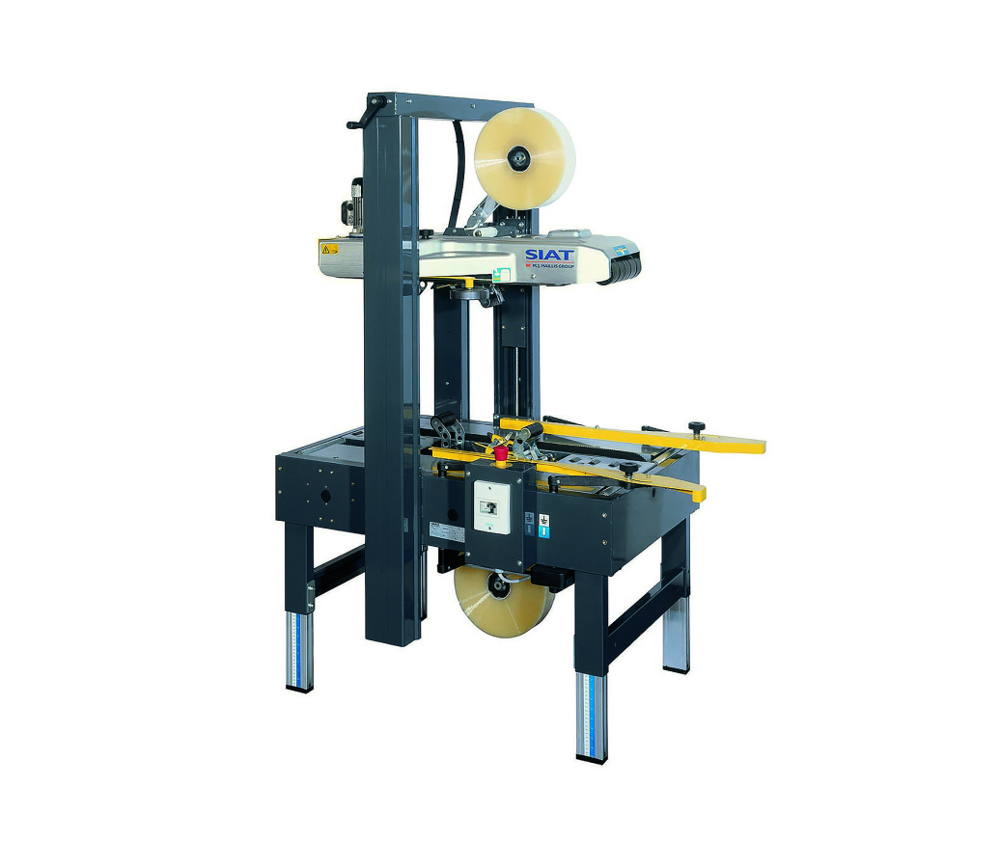

Инструкция к полуавтоматическому заклейщику коробов
Полуавтоматический заклейщик коробов — это устройство, предназначенное для эффективной и быстрой заклейки картонных коробов. Ниже приведены основные шаги по его использованию и настройке.
1. Подготовка к работе
-
Проверка оборудования: Убедитесь, что заклейщик находится в исправном состоянии. Проверьте наличие всех необходимых компонентов, таких как рулоны клейкой ленты и механизмы подачи.
-
Настройка рабочего места: Убедитесь, что рабочая зона чистая и свободная от посторонних предметов. Установите заклейщик на ровной поверхности.
2. Настройка заклейщика
-
Регулировка высоты: Настройте высоту заклейщика в зависимости от размеров коробов, которые вы будете обрабатывать. Это можно сделать с помощью специальных регулировочных винтов.
-
Настройка ширины: Убедитесь, что ширина устройства соответствует ширине коробов. При необходимости отрегулируйте механизмы, чтобы обеспечить правильное позиционирование коробов.
3. Загрузка клейкой ленты
-
Установка рулона: Установите рулон клейкой ленты в соответствующий отсек заклейщика. Убедитесь, что лента правильно намотана и свободно движется.
-
Протягивание ленты: Протяните конец ленты через механизм подачи, следуя указаниям на устройстве. Убедитесь, что лента натянута и не перекручена.
4. Процесс заклейки
-
Помещение коробов: Поместите короб в рабочую зону заклейщика. Убедитесь, что он правильно выровнен и находится в нужном положении.
-
Запуск заклейщика: Нажмите кнопку запуска или активируйте механизм, чтобы начать процесс заклейки. Устройство автоматически заклеит верхнюю и/или нижнюю часть коробов в зависимости от настроек.
-
Контроль качества: После заклейки проверьте качество соединения. Убедитесь, что лента прочно приклеена и нет пропусков.
5. Завершение работы
-
Очистка устройства: После завершения работы очистите заклейщик от остатков клейкой ленты и пыли. Это поможет продлить срок службы оборудования.
-
Хранение: Если заклейщик не будет использоваться в течение длительного времени, храните его в сухом и чистом месте.
Заключение
Полуавтоматический заклейщик коробов значительно упрощает процесс упаковки и повышает его эффективность. Следуя этой инструкции, вы сможете правильно настроить и использовать устройство для достижения наилучших результатов.